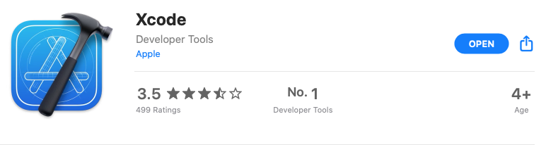
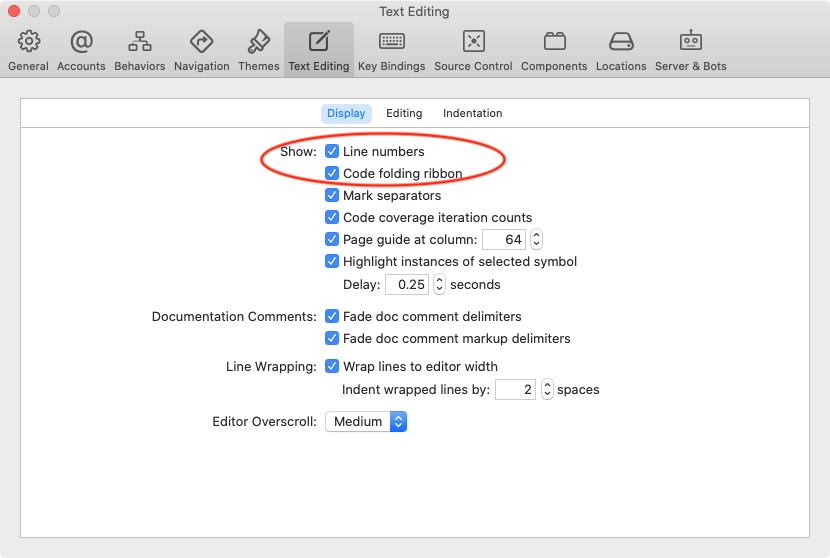
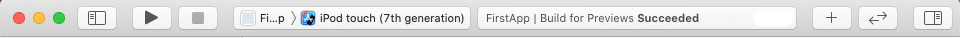
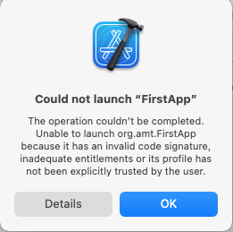

第1章：检查你的工具¶
你渴望深入了解这本书并创建你的第一个iOS应用程序。如果您以前从未使用过Xcode，请花些时间来阅读本章。你要确定你的工具是有效的，并学习如何有效地使用它们。
开始¶
要开发iOS应用程序，您需要一台安装了Xcode的Mac。如果你想在iOS设备上运行你的应用程序，你需要一个Apple ID。如果你在GitHub或类似的网站上有一个账户，你将能够从Xcode连接到该账户。
macOS¶
要使用SwiftUI画布，你需要一台运行Catalina（v10.15）或更高版本的Mac。要安装Xcode，您的用户账户必须具有管理员身份。
Xcode¶
要安装Xcode，您需要在Mac的驱动器上有29GB的可用空间。
➤ 打开App Store应用程序，然后搜索并GET Xcode。这是一个大的下载，所以需要一些时间。在你等待的时候，有足够的时间为自己准备一份点心。或者，为了保持进度，请浏览第12章，"苹果应用开发生态系统"。
➤ 安装完成后，从App Store页面中打开它：

Note
你可能有你最喜欢的方式来打开一个Mac应用程序，它也会在Xcode中工作。在Applications中双击它。或者在Spotlight中搜索它。或者双击一个项目的.xcodeproj文件。
在安装后第一次打开Xcode时，你会看到这个窗口。安装额外的所需组件？:
➤ 点击安装，在出现的窗口中输入你的Mac登录密码。这需要一点时间，大约足够泡一杯茶或咖啡的时间。
➤ 当这个安装过程完成后，你可能需要再次打开Xcode。第一次打开Xcode的时候，你会看到这个欢迎窗口：
如果您不想在每次打开Xcode时看到这个窗口，请取消勾选Show this window when Xcode launches。您可以从Xcode菜单Window ▸ Welcome to Xcode或按Shift-Command-1手动打开这个窗口。而且，有一个Xcode菜单项来执行这个窗口中列出的每个动作。
创建一个新的Xcode项目¶
您将为本章创建一个新的Xcode项目。下一章提供了一个启动项目，您将在此基础上建立第1节的其他内容。
➤ 点击创建一个新的Xcode项目。或者，如果你想在没有欢迎窗口的情况下进行，按Shift-Command-N或者从菜单中选择File ▸ New ▸ Project...。
会出现一大组选择：
➤ 选择iOS ▸ App，然后点击Next。现在，你可以给你的项目命名：
- 对于产品名称，输入FirstApp。
- 暂时跳过团队。
- 对于组织标识符，输入你的域名的反向
DNS。如果你没有域名，只需输入符合这个模式的东西，如org.audrey。灰色的Bundle Identifier会变成your-org-id.FirstApp。当你向App Store提交你的应用时，这个捆绑标识符将唯一地识别你的应用。 - 对于界面，选择
SwiftUI。 - 对于生命周期，选择
SwiftUI App。 - 对于语言，选择
Swift。 - 取消勾选复选框。
➤ 点击下一步。在这里，你决定在哪里保存你的新项目。
Note
如果您忘记了您保存项目的位置，您可以通过在Xcode菜单中选择File ▸ Show in Finder来找到它。
➤ 如果你要把这个项目保存到一个目前不在源码控制之下的位置，请点击源码控制复选框来创建一个本地Git仓库。在本章的后面，你将学习如何将其连接到一个远程仓库。
➤ 点击创建。你的新项目出现了，在编辑器窗格中显示ContentView.swift。
看起来有很多事情要做! 不要担心，大多数iOS开发者对Xcode的了解足以完成他们的工作，但几乎没有人知道如何使用它的全部。另外，苹果每年都会对其进行修改和补充。学习它的最好的（也是唯一的）方法是跳入并开始使用它。
准备好了，准备好了，跳吧!
快速浏览Xcode¶
你将花大部分时间在一个.swift文件中工作：
Xcode窗口有三个主要窗格。导航器、编辑器和检查器。当你在编辑器中查看一个SwiftUI视图文件时，你可以与代码并排查看预览画布。当应用程序运行时，调试区在编辑器下方打开。
你可以用正上方的工具栏按钮隐藏或显示导航器，检查器也是如此。调试区在它自己的工具栏上有一个隐藏按钮。你也可以通过拖动其边界到Xcode窗口的边缘来隐藏这三个窗格中的任何一个。
而且这三个面板都有键盘快捷键：
- 隐藏/显示导航仪：
Command-0 - 隐藏/显示检查员：
Option-Command-0 - 隐藏/显示调试区：
Shift-Command-Y
Note
在本章的assets文件夹中，有一个方便的Xcode键盘快捷方式的小抄。这不是一个完整的列表，只是许多人使用的列表。
导航仪¶
导航器有九个标签。当导航仪窗格被隐藏时，你可以按Command-1到Command-9在其中一个标签中直接打开它：
- 项目：添加、删除或分组文件。在编辑器中打开一个文件。
- 源代码控制：查看Git仓库的工作副本、分支、提交、标签、远程和隐藏的修改。
- 符号：命名对象和方法的分层或平面视图。
- 查找：搜索工具。
- 问题：构建时和运行时的错误和警告。
- 测试：创建、管理和运行单元和UI测试。
- 调试：当你的应用程序运行时，关于CPU、内存、磁盘和网络使用的信息。
- 断点：添加、删除、编辑和管理断点。
- 报告：查看或导出构建和运行项目时产生的报告和日志。
底部的过滤器字段对每个标签都是不同的。例如，项目过滤器让你只显示你最近处理的文件。这对于有很多文件处于深度嵌套层次结构的项目来说非常方便。
编辑器¶
当你在一个代码文件中工作时，编辑器会显示代码和一个最小地图。小地图对于有许多属性和方法的长的代码文件是很有用的。你可以把光标悬停在小地图上，找到一个特定的属性，然后点击直接进入该属性。本书中的应用程序不需要它，所以你可能想通过编辑器右上角的按钮隐藏它。
当你在一个SwiftUI文件中工作时，Option-Command-Return可以显示或隐藏预览画布。
编辑器有浏览器功能，如标签和前进/后退。标签的键盘快捷键与网页浏览器相同。Command-T打开一个新标签，Shift-Command-[or]移动到上一个或下一个标签，Command-W关闭标签，Option-click一个标签的关闭按钮关闭所有其他标签。后退/前进按钮显示前一个/下一个文件的列表，但键盘快捷键是Control-Command-right或-left箭头。
检查员¶
检查员窗格有三个或四个标签，取决于项目导航器中选择的内容。当这个窗格被隐藏时，你可以通过按Option-Command-1到Option-Command-4直接打开它的一个标签：
- 文件：名称、完整路径、目标成员。
- 历史：源控制日志。
- 快速帮助：如果你在编辑器中选择一个符号，则是开发者文档的简短形式。
- 属性：你在编辑器中选择的符号的属性。
当你在项目导航器中选择一个文件时，第四个标签会出现。如果你选择了一个文件夹，你只能得到前三个标签。
这个快速浏览只是刷新了您在Xcode中可以做的事情的表面。接下来，你将在探索你的新项目时使用一些它的工具。
导航偏好¶
在本书中，你将使用键盘快捷键来检查和组织你的代码。与打开导航器标签或检查器的固定键盘快捷方式不同，你可以为哪个快捷方式做什么设置偏好。为了避免在阅读本书时出现混乱，你将设置你的偏好，以配合你将看到的说明。
➤ 按Command-,打开偏好设置。在Navigation选项卡中，设置：
- 在代码上
Command-click，选择代码结构 - 在代码上
Option-click，显示快速帮助 - 将
Navigation Style设置为Open In Tabs或Open in Place。
ContentView.swift¶
你的新项目的核心在ContentView.swift中，你的新项目在这里打开。你将在这里布置你的应用程序的初始视图。
➤ 如果ContentView.swift不在编辑器中，在项目导航器中选择它。
前面几行是注释，用来识别文件和你这个创建者。
import¶
第一行代码是一个import语句：
import SwiftUI
这与大多数编程语言的工作原理一样。它允许你的代码访问内置SwiftUI模块中的一切。看看如果缺少了它会怎样。
➤ 点击import语句，然后按Command-/。
你注释了import语句，所以出现了编译器错误，抱怨View和PreviewProvider。
➤ 按Command-Z来撤销。
在import语句下面有两个struct定义。一个structure是一个命名的数据类型，它封装了属性和方法。
struct ContentView¶
第一个结构的名称与文件的名称一致。如果它们不一样，也不会发生什么坏事，但大多数开发者都遵循并期待这一惯例。
struct ContentView: View {
var body: some View {
Text("Hello, world!")
.padding()
}
}
看一下ContentView: View，你可能认为ContentView继承了View，但Swift结构没有继承性。View是一个协议，而ContentView符合这个协议。
View协议的必要组成部分是body计算属性，它返回一个View。在本例中，它返回一个Text视图，显示通常的Hello, world!文本。
Swift提示：如果只有一条代码语句，你不需要明确使用return关键字。
Text视图有一个padding修改器--View的一个实例方法--可以在文本周围增加空间。你可以在这个截图中看到它：
这也显示了Text的快速帮助检查器。如果你不想为这个检查器使用屏幕空间，可以在代码编辑器中选择点击Text，在弹出的窗口中看到相同的信息。在开发人员文档中单击"打开"，会打开一个包含更多信息的窗口。
➤ 在代码编辑器或画布中选择文本视图，然后选择属性检查器。在添加修改器字段中单击，并等待一会儿，直到修改器菜单出现：
滚动这个列表会不停地进行。
当你想给一个View添加几个修改器时，这个检查器很有用。如果你只需要添加一个修改器，可以通过Control-Option-click视图来打开Attributes inspector弹出窗口。
struct ContentView_Previews¶
在ContentView下面有一个ContentView_Previews结构。
struct ContentView_Previews: PreviewProvider {
static var previews: some View {
ContentView()
}
}
ContentView_Previews结构是出现在代码编辑器右边的画布上的。再一次，看看如果缺少了它会发生什么。
➤ 选择ContentView_Previews的五行，然后按Command-/。
如果没有ContentView_Previews"`，画布中就没有东西了。
➤ 按Command-Z撤销，或者，如果这五行仍然被选中，按Command-/取消注释。
对于大多数应用程序，ContentView.swift只是一个起点。通常，ContentView只是定义了应用程序的组织，协调了几个子视图。而通常，你会在不同的文件中定义这些子视图。
创建一个新的SwiftUI视图文件¶
你在SwiftUI应用中看到的所有东西都是一个View。苹果鼓励你根据需要创建尽可能多的子视图，以避免冗余（DRY或Don't Repeat Yourself），并组织你的代码，使其易于管理。编译器会负责创建高效的机器代码，因此您的应用程序的性能不会受到影响。
➤ 在项目导航器中，选择ContentView.swift并键入Command-N。或者，右键单击 ContentView.swift，然后从菜单中选择新文件...。
Note
一个新的文件出现在项目导航器中的当前选定的文件下面。如果这不是你想要的位置，把它拖到你希望它出现在项目导航器的位置。
新文件窗口显示了很多选项! 你想要的是iOS ▸ User Interface ▸ SwiftUI View。在第5章，"组织你的应用程序的数据"，你会得到创建一个Swift文件。
命名一个新的SwiftUI视图¶
➤ 选择SwiftUI视图，然后点击下一步。在下一个窗口中，您可以指定一个文件名。默认情况下，新视图的名称将与文件名相同。你将在这个文件中定义ByeView，所以用ByeView替换SwiftUIView。
Note
Swift的惯例是用CamelCase命名类型（如struct），用camelCase命名属性和方法。
这个窗口还让你指定在哪里（在项目中）创建你的新文件。默认位置通常是正确的：在这个项目中，在这个组（文件夹）中，在这个目标中。
➤ 单击创建以完成对新文件的创建。
SwiftUI视图的模板代码看起来与新项目的ContentView几乎相同。
import SwiftUI
struct ByeView: View {
var body: some View {
Text("Hello, world!")
}
}
struct ByeView_Previews: PreviewProvider {
static var previews: some View {
ByeView()
}
}
和ContentView一样，该视图的主体包含Text("Hello, world!")，但没有填充。
使用你的新SwiftUI视图¶
接下来，编辑你的新视图的Text视图字符串，看起来像这样。
Text("Bye bye, World!")
现在，在ContentView.swift中，在代码编辑器中，删除Text视图，然后输入bye。Xcode建议使用一些自动完成的方法：
注意你不需要输入ByeView的正确大写字母.
Note
为你的类型、属性和方法起描述性的名字是良好的编程实践，自动完成是Xcode帮助你做正确事情的一种方式。你也可以在Xcode菜单中打开拼写检查功能。Edit ▸ Format ▸ Spelling and Grammar ▸ Check Spelling While Typing.
从列表中选择ByeView，然后加上括号，这样这一行就看起来像这样：
ByeView()
你正在调用ByeView的初始化器来创建视图的一个实例。
➤ 单击Resume或按Option-Command-P来刷新预览。
你将创建许多新的SwiftUI视图文件和Swift文件来开发本书中的应用程序。
你的项目中还有什么？¶
项目导航器列出了几个文件和文件夹。
FirstAppApp.swift。这个文件包含了你的应用程序的入口点的代码。这就是实际启动你的应用程序的内容。
@main
struct FirstAppApp: App {
var body: some Scene {
WindowGroup {
ContentView()
}
}
}
@main属性将FirstAppApp作为应用程序的入口点。你可能习惯于写一个main()方法来实际启动一个应用程序。App协议处理了这个问题。
App协议只需要一个名为body的计算属性，返回一个Scene。而Scene是一个视图层次结构的根视图的容器。
对于一个iOS应用程序，默认设置是一个WindowGroup场景，包含ContentView()作为其根视图。一个常见的定制是设置不同的根视图，这取决于用户是否已经登录。
在iOS应用程序中，视图层次结构充满了整个显示屏。在macOS或iPadOS应用程序中，WindowGroup可以管理多个窗口。
Assets.xcassets：在这里存储你的应用程序的图像和颜色。AppIcon是一个特殊的图像集，用于你的应用程序的图标的所有不同尺寸和分辨率。
Info.plist：这个配置属性列表包含启动你的应用程序所需的信息。许多名称是由你在创建项目时设置的选项衍生出来的环境变量。在这里你可以找到像应用程序的名称和版本号。
Preview Content：如果你的视图在开发你的应用程序时需要额外的代码和样本数据或资产，请将它们存储在这里。它们不会被包含在你的应用程序的最终发布版本中。Products：这是Xcode在您构建和运行项目后存储您的应用程序的地方。一个项目可以包含其他产品，如Watch应用程序或框架。
在这个列表中，最后两个项目是组。项目导航器中的组看起来是文件夹，但它们不一定与Finder中的文件夹相匹配。特别是，在Finder中，你的项目中没有产品文件夹。
➤ 在项目导航器中，选择Products ▸ FirstApp.app，然后显示文件检查器：
FirstApp.app并不在你的项目文件附近! 它在你的主目录中隐藏的Library文件夹中。
Note
不要重命名或删除任何这些文件或组。Xcode在项目的构建设置中存储了它们的路径名称，如果找不到它们就会标记错误。
你将在本书的其余部分中学习如何使用这些文件。
Xcode首选项¶
Xcode有大量的首选项，您可以设置，使您在Xcode中的时间更有效率。
主题¶
您将花费大量的时间在代码编辑器中工作，所以您希望它看起来很好，也可以帮助您区分代码的不同组件。Xcode提供了几个预配置的字体和颜色主题，供您选择或修改。
➤ 按Command-,打开首选项，然后选择主题标签：
继续探索这些。你可以定制它们或创建你自己的。我在这里等着。;]
匹配定界符¶
SwiftUI代码使用了大量的嵌套闭包。错配你的大括号和小括号真的很容易。Xcode可以帮助你找到任何不匹配的地方，并试图防止这些错误的发生。
➤ 在首选项中，选择文本Text Editing ▸ Editing。
大部分的代码完成项目都是超级有用的。虽然你可以复制和粘贴本书中的代码，但你应该尽可能多地输入代码，以了解这些辅助工具的工作原理。
这里有一个很大的提示，说明有些东西是错误的，或者你在错误的地方输入了。你希望Xcode在你打字的时候建议你完成，但是没有任何（有用的）东西出现。当这种情况发生时，这通常是因为你在你需要的闭合之外。
➤ 现在选择Text Editing ▸ Display标签。勾选代码折叠带，如果你喜欢看，还可以勾选行号。

那么，什么是代码折叠色带？在行号和代码之间，你会看到较深的灰色垂直条。将你的光标悬停在其中一条上，它就会突出显示该闭合的开始和结束括号：
查看匹配定界符的其他方法：
- 在
{, (, [或闭合分隔符上的选项盘旋。Xcode会突出显示开始和结束定界符。 - 双击一个定界符。
Xcode会选择定界符和它们的内容。
现在，单击条形图（带状图）来折叠（折叠）这些代码行。
当你试图在一些复杂的深度嵌套的代码中找到你的方法时，这可能是非常有用的。
➤ 单击色带以展开代码。
添加账户¶
您可以通过添加Apple ID和源控制帐户的登录信息来访问一些Xcode功能。
➤ 在首选项中，选择账户：
➤ 添加您的Apple ID。如果你有一个单独的付费的苹果开发者帐户，也要添加它。
要在设备上运行您的应用程序，您需要选择一个团队。如果您不是苹果开发者计划的成员，您可以使用您的Apple ID帐户从Xcode在设备上安装最多三个应用程序。该应用程序在你安装后工作七天。
要将推送通知或Apple Pay等功能添加到您的应用程序中，您需要将团队设置为开发者计划账户。
在第12章"苹果应用开发生态系统"中了解更多关于开发者计划的信息。
- 如果你在
Bitbucket、GitHub或GitLab有一个账户，如果你想把项目的本地git仓库推送到远程仓库，就在这里添加它。
Bitbucket、GitHub和GitLab账户需要一个个人访问令牌。点击链接，打开网站的令牌创建页面。
➤ 要设置远程仓库，请打开源控制导航器(Command-2)，然后单击设置按钮并选择新建FirstApp远程...：
➤ 选择你的选项，然后点击创建：
而在这里，它是:
运行你的项目¶
到目前为止，你一直依靠预览来查看你的应用程序的外观。在下一章中，你将使用Live Preview来与你的应用程序进行交互。但有些功能在Live Preview中无法使用，所以你需要在模拟器上构建和运行你的应用程序。而且有些东西只能在iOS设备上运行。另外，在你的iPhone上拥有你自己构建的东西是很有趣的!
Xcode的工具条¶
首先，快速浏览一下工具条：

Note
按Option-Command-T来显示或隐藏工具条。如果这个键盘快捷键与其他应用程序冲突，请从Xcode视图菜单中选择该命令。
到目前为止，你只使用了工具栏两端的按钮，以显示或隐藏导航器或检查器面板。
在导航窗格按钮之后从左到右工作：
- 运行按钮：建立并运行（
Command-R）该项目。 - 停止按钮：停止（
Command-.）正在运行的项目。 - 方案菜单：这个按钮的标签是应用程序的名称。选择、编辑或管理方案。每个产品都有一个方案。
FirstApp只有一个产品，所以它只有一个方案。 - 运行目的地菜单：这个菜单默认为它的最后一个项目，目前是
iPod touch。选择一个连接的设备或一个模拟的设备来运行项目。 - 活动视图：一个宽大的灰色区域，显示项目名称、状态信息和警告或错误指示。
- 库按钮：标签是一个
+号。打开存储在资产中的视图、修改器、代码片断和媒体及颜色的库。选择点击这个按钮来保持库的开放。 - 代码审查按钮：如果这个项目有一个本地的
git仓库，这个按钮会显示当前文件的当前版本和最新提交的版本的diff。你可以从菜单中选择早期提交的版本。
现在你知道了这些控件的位置，是时候使用其中的一些了。
选择运行目的地¶
苹果公司出售了很多不同型号的iPhone，加上iPad，甚至还有iPod Touch。它们都有不同的尺寸，有些还有凹槽。你怎么知道你的应用程序在每个屏幕尺寸上看起来都很好？
你不需要一个完整的iOS设备的集合。Xcode有几个开发工具，其中一个是模拟器。通过运行目的地菜单，您可以从模拟设备的列表中进行选择。
➤ 单击运行目的地按钮并选择iPhone 12 Pro。
➤ 刷新ContentView或ByeView的预览：
预览默认使用运行目标设备。你可以创建一个以上的预览，并通过previewDevice修改器将每个预览设置为不同的设备。
比如说：
struct ContentView_Previews: PreviewProvider {
static var previews: some View {
Group {
ContentView()
ContentView()
.previewDevice("iPhone SE (2nd generation)")
}
}
}

预览通常与你的应用程序在模拟或真实设备上运行的情况相同，但并非总是如此。如果你觉得预览与你的代码布局不一致，试着在模拟器上运行它。
Warning
要放大或缩小预览画布，请使用画布工具栏中的+或-按钮。
建立和运行¶
➤ 单击运行按钮或按Command-R。
第一次在模拟设备上运行项目时，它是从"关闭"状态开始的，所以你会看到一个加载指示灯。在你退出模拟器应用之前，这个特定的模拟设备现在是"醒着的"，所以即使你在它上面运行一个不同的项目，也不会出现启动延迟。
模拟设备启动后，应用程序的启动屏幕出现。对于FirstApp来说，这只是一个空白屏幕。你将在第16章"向你的应用程序添加资产"中学习如何设置你自己的启动屏幕。
现在，你的应用程序正在运行！
在这个应用程序中没有发生什么，但调试工具栏出现在编辑器窗口的下面。在这张截图中，我显示了调试区域，在导航窗格中选择了调试标签，然后选择了CPU项目。
不停止¶
这里有一个小技巧，可以让你的Xcode生活更轻松一些。
➤ 不要点击停止按钮。是的，它被启用了。但相信我，你会喜欢这个的。 :]
➤ 在ByeView.swift中，将Bye bye替换为Hello again：
Text("Hello again, World!")
➤ 点击运行按钮或按Command-R。
弹出这个信息：

➤ 不要点击停止，尽管这样做也可以。当前运行的进程将停止，而新的进程将运行。而且，每次你忘记停止该应用时，都会发生这种情况。这只需要片刻，但会有一点刺痛。每次都是如此。而且它很容易摆脱。
➤ 勾选不要再显示此信息，然后点击停止。
应用程序就会加载你的新变化。但这不是我想给你看的东西。
➤ 再来一次。点击运行按钮或按下Command-R。
没有恼人的信息，没有"doh!"的时刻，再也不会有了! 不客气；] 。
在iOS设备上运行你的应用程序¶
有时，你的应用程序在模拟设备上看起来或表现得不太对劲。在真正的设备上运行它是最后的决定：它可能看起来和你期望的一样，或者它可能同意预览和模拟器的意见，你有更多的工作要做。
此外，还有一些功能，如运动和摄像头，你不能在模拟器上测试。对于这些，你必须在真实的设备上安装你的应用程序。
苹果公司尽最大努力保护其用户免受恶意应用程序的影响。这种保护的一部分是确保苹果知道谁对你设备上的每一个应用程序负责。在您从Xcode将您的应用程序安装到设备上之前，您需要选择一个团队（您的Apple ID），以便从Apple获得签名证书。
➤ 在项目页面中，选择目标。在签名和能力选项卡中，选中自动管理签名，然后从团队菜单中选择你的账户。
经过一些活动的旋转，你会看到一个Provisioning Profile和一个Signing Certificate。Xcode已经创建了这些并将证书存储在你的Mac的钥匙串中。
Note
你的项目的捆绑标识符使用你的组织名称，因为你把它作为一个新的项目来创建。本书中的其他应用程序有以com.raywenderlich为组织的启动项目。如果你想在iOS设备上运行这些应用，你需要将捆绑标识中的组织名称改为你独有的名称。这是因为作者之一已经用原始捆绑ID签署了应用程序，而你不是我们团队的成员。
要在你的iOS设备上运行本书的应用程序，它必须安装有iOS 14。如果它不是绝对最新的更新，请选择项目，然后设置它的iOS部署目标以匹配你的设备。

➤ 用电缆将您的设备连接到您的Mac。使用苹果电缆，因为其他品牌的电缆可能无法用于此目的。
注意：如果您的帐户是付费的苹果开发者帐户，您将不需要进行接下来的几个步骤。在设备上运行你的应用程序就可以了。
当你第一次将设备连接到你的Mac时，设备会询问信任这台电脑吗？
➤ 点选信任，然后在提示下输入设备密码。
➤ 从运行目的地菜单中选择你的设备。它出现在顶部，在模拟器的上方：
➤ 解锁你的设备，然后构建并运行你的项目。保持你的设备屏幕处于激活状态，直到应用程序在你的设备上启动。
这是你第一次在设备上运行一个应用程序，所以有几个额外的步骤，苹果让你执行，主要是想确保没有任何讨厌的东西安装在你的设备上。
➤ 首先，你需要允许codesign访问Xcode存储在钥匙链中的证书：
➤ 输入你的密码，然后点击总是允许。
接下来，你会看到FirstApp的应用图标出现在你的设备屏幕上，但这个错误信息出现在你的Mac上：

在这三个可能的原因中，是最后一个原因阻碍了事情的发展：它的资料没有被用户明确信任。苹果真的不希望任何人在你的设备上安装潜在的恶意应用程序。你必须说它是好的。问题是，这里没有什么可以告诉你该怎么做。
➤ 好吧，应用程序的图标就在你的设备屏幕上，为什么不点它看看会发生什么呢？
你可以允许在设置中使用这些应用程序是一个相当小的提示，但打开设置，看看有什么。你可能永远也猜不到要去哪里看，所以这里有相关的截图：
➤ 点选常规。向下滚动到设备管理 - 你正好可以看到你的证书名称的开头。点这个项目。
➤ 点选苹果开发...，然后点选信任"苹果开发...，最后，点选信任。
除非你从这个设备上删除所有的应用程序，否则你不需要再这样做。
➤ 现在，关闭Settings并点选FirstApp图标：
不堪重负？是的，好吧，思想才是最重要的。］
重要的是，你现在已经准备好在这个设备上运行你自己的项目。当你真的想马上运行一些东西时，你就不必停下来处理这些信托业务了。
在接下来的章节中，你将创建一个更有趣的应用程序。
关键点¶
Xcode窗口有导航器、编辑器和检查器面板、一个工具栏和一个调试区，还有大量的首选项。- 你可以在首选项中设置一些导航键盘快捷键，以配合本书的说明。
- 模板项目定义了一个
App，它以ContentView启动，在Text视图中显示Hello, world!。 - 你可以在检查器中或通过使用键盘快捷键查看快速帮助文档。或者，你可以打开开发者文档窗口。
- 当你创建一个新的
SwiftUI视图文件时，给它一个与你将在其中创建的View相同的名字。 Xcode的自动完成、分隔符匹配、代码折叠和拼写检查功能可以帮助您避免错误。- 您可以选择
Xcode的一个字体和颜色主题，修改一个或创建您自己的。 - 您可以在一个模拟设备上运行您的应用程序，或创建特定设备的预览。
- 您必须在
Xcode首选项中添加一个Apple ID账户才能在iOS设备上运行您的应用程序。 - 第一次在
iOS设备上运行您的项目时，苹果要求您完成几个"信任"步骤。